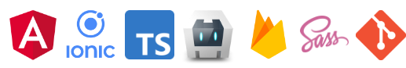
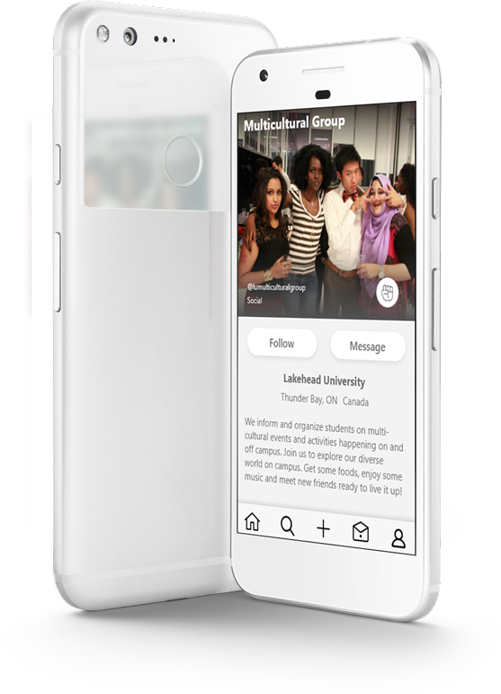

 <ion-content>
  <ion-grid>
    <ion-row>
      <ion-col size="12" size-md="6" size-sx="1">
                
        <h5>A mobile chat application for students to find other students who share similar interests and desire to participate various cultural activities. </h5>      
        <p><b>Started:</b> Jan 2021</p>
        <p><b>Work:</b> Owner, Designer, Developer</p>
        <p><b>Status:</b> On hold (June 2020)</p>
        <p><b>Features:</b> Chat, Video, Picture, GPS Location, Local Storage</p>
        <p><b>Background:</b> I've been an Angular enthusiast every 
          since the early Angular JS days and this was my first solo comprehensive project. 
          The 2020 COVID-19 pandemic presented an opportunity to get started on my passion 
          project. As a 2021 New Year resolution, I challenged myself  to write codes and 
          push to GitHub everyday. Six months later, I am proud and estatic to say that was 
          able to complete more than 70% of my project. I paused development to work on my portfolio
          and explore a new employment opportunity.
        </p>
        <p><b>Tools :</b> Angular, Ionic Framework, TypeScript, Cordova, Firebase, SASS, GIT </p>
          
        

      </ion-col>
      <ion-col>
        <ion-row class="kc-btns">
          
          <ion-button 
            (click)="openGitHub('https://github.com/pullpushtree/kingdom-club/')"
            class="kc-btn-gradient" 
            justify-content-end 
            align-items-end 
            shape="round" >
            Code            
            <ion-icon color="light" slot="icon-only" name="logo-github" ></ion-icon>
          </ion-button>

          <ion-button 
          (click)="openBehnace('https://www.behance.net/gallery/124063985/Kingdom-Club')" 
            class="kc-btn-clear" 
            fill="outline" 
            color="light" 
            shape="round" >
            Design            
            <ion-icon color="medium" slot="icon-only" name="logo-behance"></ion-icon>
          </ion-button>

        </ion-row >
        <ion-row class="kc-img">         
          
        </ion-row>

      </ion-col>
    </ion-row>
  </ion-grid>
</ion-content>


